The chips that run the world are printed by the most complicated machine humans build. This is how one is made, and the whole way down into it, from that machine to the single atoms it arranges, in the highest resolution I could find.
Almost every image is a real photograph or micrograph, shown as large as it comes. Click or tap any one to zoom all the way in. scroll to begin
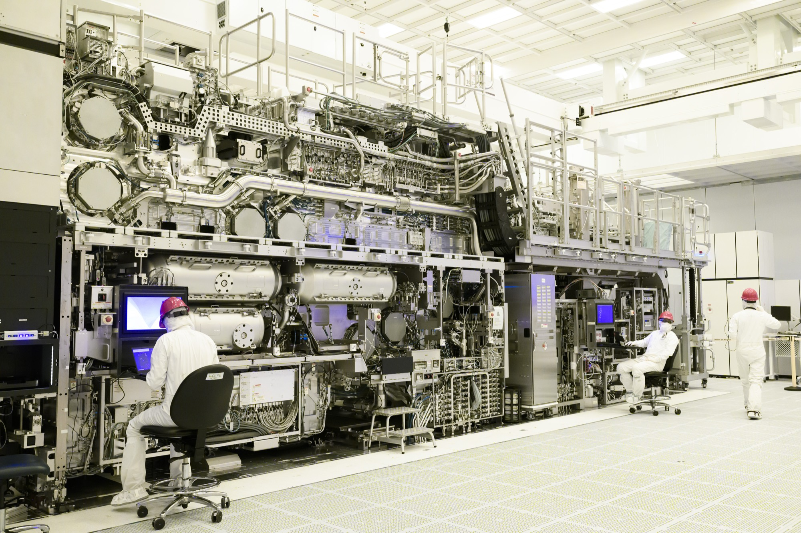
The machine · ASML High-NA EUV, EXE:5000This is the machine that prints nearly every advanced chip on Earth, an ASML High-NA EUV scanner, seen head-on with its panels off. Only one company in the world knows how to build it: about $380 million each, it ships in dozens of freight containers and is bolted together on site over months. The mirrors that steer its light, ground by Zeiss, are so smooth that, blown up to the size of Germany, the tallest bump would be under a millimeter.
A finished chip is often called the most complex object humanity manufactures, and the strange part is that it is not really carved or assembled. It is printed, with light, in a clean room, hundreds of times over. What follows is the whole journey, from this machine down to the single atoms it arranges, and how a fistful of purified sand becomes sixteen billion switches packed into a fingernail.
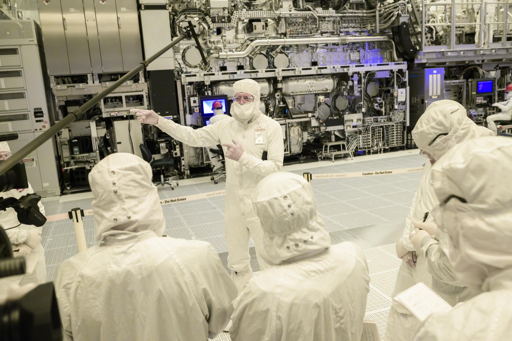
The cleanroom · Intel, before the EUV toolThis is Intel's cleanroom, a team gathered in front of one of these machines. The air in here is thousands of times cleaner than a hospital's, and the bunny suits protect the chip from the people, not the other way around: a single flake of skin lands like a boulder across the circuitry.
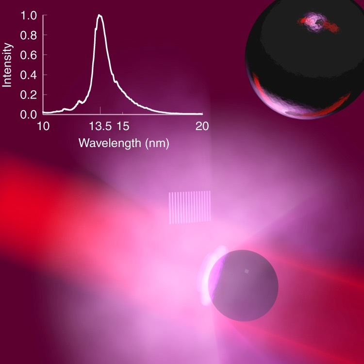
The light · laser-produced tin plasma · 13.5 nmThis is how the light is made. Inside a vacuum chamber, molten tin is pushed through a nozzle as a stream of 50,000 droplets a second, each thinner than a hair. A laser catches every droplet twice: a gentle pulse flattens it into a disk, then a high-power carbon-dioxide laser blast vaporizes it into a plasma hotter than the surface of the sun. That plasma glows at exactly 13.5 nanometers, the extreme-ultraviolet light that draws the chip, and a giant curved mirror cupped behind it gathers the glow and funnels it into the scanner. The light is so short that air and even glass swallow it, so the whole path is mirrors, in vacuum.
it starts as sand
A single crystal
A chip begins as a rock. High-purity quartz, not beach sand, which is far too dirty, is cooked with carbon in a furnace until it becomes silicon that is already about 99 percent pure. To go the rest of the way, that silicon is turned into a gas, distilled like moonshine, and baked back into solid rods so clean that fewer than one atom in a billion is anything but silicon. Those rods are melted at over 1,400 degrees, a pencil-thin seed crystal is dipped into the glowing pool, and as it is drawn slowly upward and turned, the melt freezes onto it one atomic layer at a time, copying the seed so faithfully that the whole rod, grown over three to four days, is a single unbroken crystal. Most of the world's chip-grade crystal is grown in Japan.
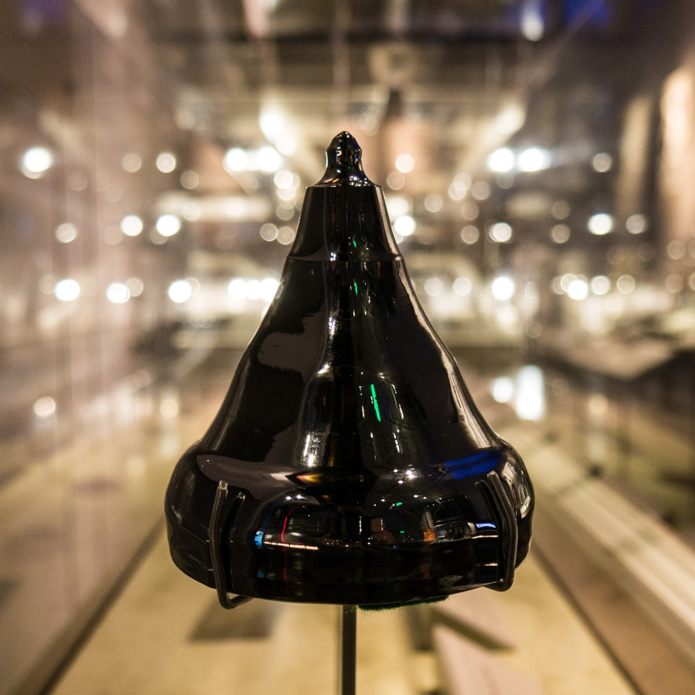
The crystal · one grown silicon bouleThe result is a mirror-black crystal called a boule, every atom locked into one continuous lattice (that dark-glass sheen is pure silicon). It is far bigger than people expect.
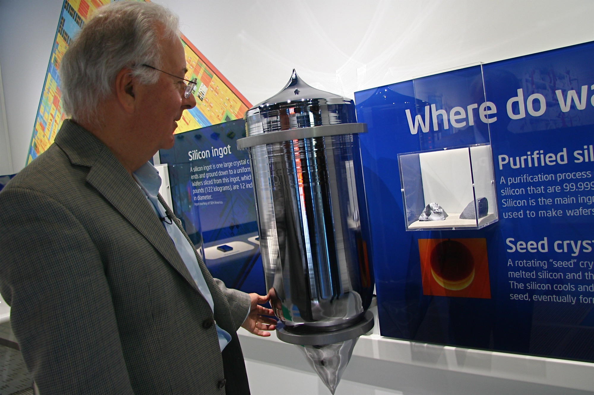
For scale · a full ingot, beside a personA modern ingot stands up to two meters tall and weighs around 265 kilograms, taller than a person and about as heavy as a baby grand piano. (Beside it, Federico Faggin, who designed the first microprocessor.) This one crystal is then sliced into more than a thousand wafers.
from log to disc
Into a wafer
That crystal log still has to become flat discs. A single diamond-studded wire, kilometers long, is wound back and forth over rollers into a dense harp of hundreds of parallel strands, and the whole ingot is pushed through it at once, sliced into more than a thousand discs the way an egg-slicer goes through an egg. Each rough wafer, about three quarters of a millimeter thick, is then ground, etched, and polished to a mirror so flat that across its entire dinner-plate face the tallest bump is a fraction of a nanometer, a few atoms high. This blank, shining disc is what a chip is printed on.
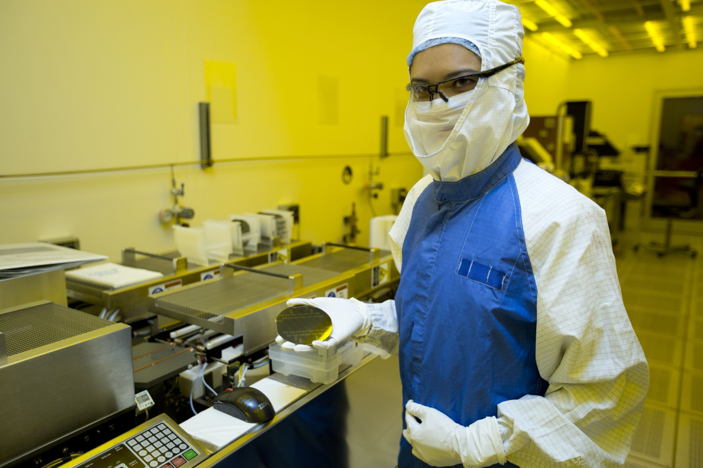
The wafer · a blank, mirror-polished discA bare 300 mm wafer, handled in the amber light of a lithography bay, where ordinary white light is filtered out so it cannot expose the coatings to come. Nothing is printed on it yet. From here it enters the loop.
printed, not carved
Printing the chip
Here is the part nearly everyone pictures wrong. You do not slot a blank wafer into one machine and collect a finished chip at the other end. The wafer rides a loop through the clean room, and goes around it dozens of times. Each lap: a whisper-thin film is laid down, a light-sensitive coating is spun on, the scanner flashes one layer's pattern onto it (shrinking the design about four times as it prints), the pattern is developed and etched into the surface, the coating is stripped off, and the wafer heads back to the start for the next layer. A chip is built up this way like a tiny building, sixty to a hundred floors of circuitry stacked one on top of another, and a single wafer can spend weeks to months in the factory, much of that just waiting in line. The scanner only ever prints one floor at a time; dozens of other machines lay down, etch, and polish the rest.
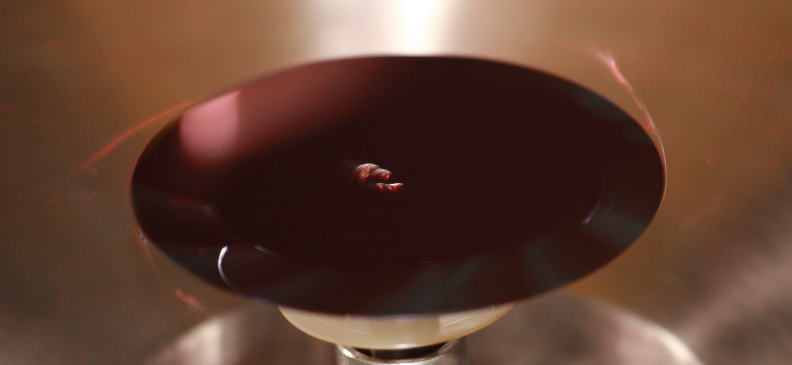
One lap begins · photoresist on a spinning waferThe start of a lap: the wafer is flooded with a light-sensitive film and spun until the coat is only molecules thick (the deep red here). Next the scanner prints this layer's pattern into it, and the etching begins.
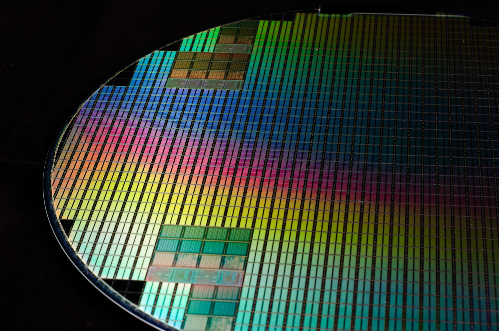
One wafer · hundreds of chips at onceMany laps later, the wafer carries hundreds of identical finished chips, printed side by side. It throws rainbows for the same reason a CD does: the circuitry is a grid finer than the wavelength of light, so each color glances off it at a different angle.
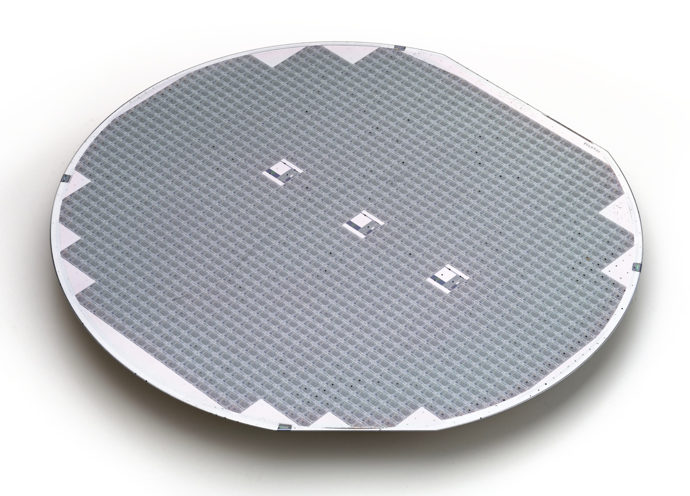
Cut apart · one wafer, hundreds of diesEvery chip is tested where it sits, then a diamond saw runs down the narrow streets between them, freeing the wafer into hundreds of separate chips. Not all of them work: a single speck of dust, landing on any one of the layers, can ruin a chip, so the failures are simply thrown away.
one chip
Into the Apple M1
Out of the loop comes one finished chip. This is the Apple M1, and the first surprise is that almost nothing you can see from the top is a switch: it is wiring. A chip is a city seen from a plane, the streets and power lines on the surface, the transistors buried at ground level under a dozen stacked layers of metal. The single largest block here is the graphics engine; the eight processor cores, the AI engine, and the memory are the other recognizable neighborhoods, and a good third of the chip is custom circuitry no one outside Apple can fully name.
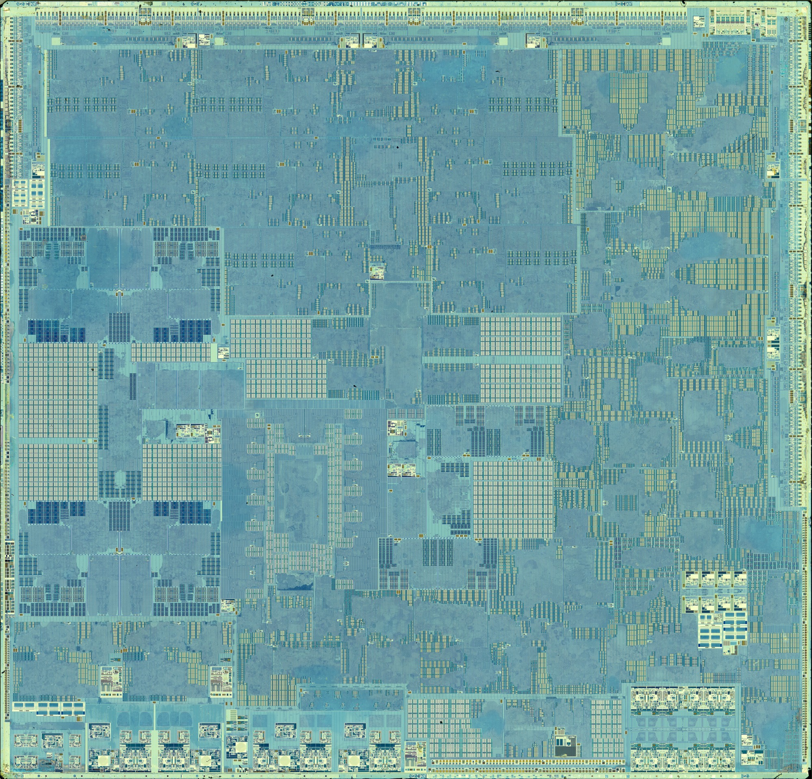
One chip · Apple M1, TSMC, 2020 · ~16,000,000,000 transistorsThis is one finished chip, the Apple M1 from the 2020 MacBook Air, lifted from its package and scanned from above. Smaller than a fingernail, it holds about 16 billion transistors. Everything from here on is a zoom into this one square of silicon.
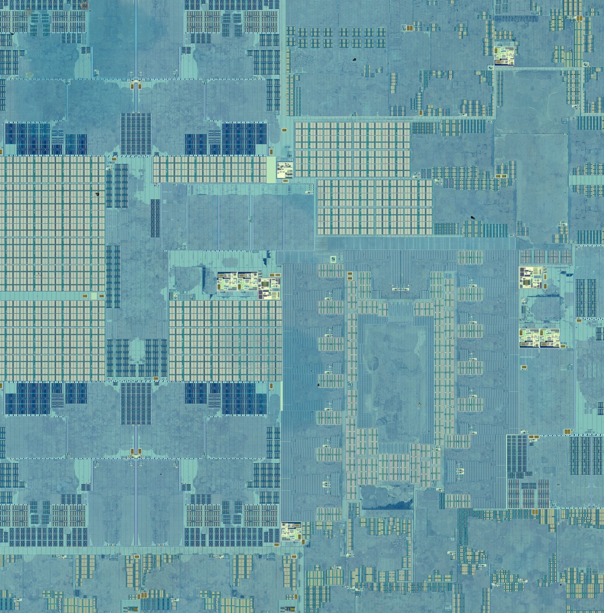
Zoom in · a few city blocksJust one of the big processor cores is only about a thirtieth of the whole chip. And look at the split here: the flawless repeating grid is memory, one tiny storage cell, a few transistors, copied out millions of times in perfect rows. The busier, tangled regions beside it are logic, the part that actually does the thinking.
below a wavelength of light
Smaller than the eye can ever see
Slip beneath that top surface and you reach the wiring itself, and it is not one layer but a dozen or more, stacked like the floors of a building. The lowest floors are a warren of hair-thin local streets between neighboring transistors; the top floors are wide highways carrying power and signals across the whole chip, and tiny vertical plugs called vias are the elevators between them. Slice straight down through the stack and something odd shows up: wires running along your cut appear as long bright bars, but wires running crosswise, off into the page, are caught end-on and look like little dots floating with nothing attached. They are connected, of course. They are simply racing off in a direction a flat slice cannot follow.
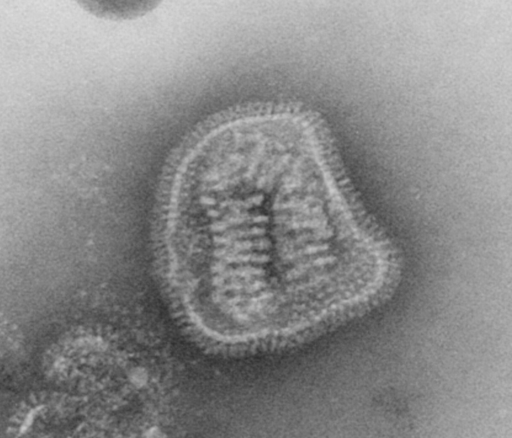
Influenza virus · ~100 nm
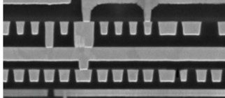
Intel 14 nm wiring · lines ~52 nm apart
The wiring · Intel 14 nm, 2014, beside a flu virusThe real thing, in cross-section: stacked floors of copper, the finest lines about 52 nanometers apart, and the bright dots are wires headed straight into the page. Set a flu virus beside it, about 100 nanometers across, and the whole virus spans just two of those lines. Chip features are now finer than most viruses; even the smallest living cells, ocean bacteria a couple hundred nanometers wide, would straddle only a handful of these wires. Unspooled, the wiring in one chip would run for tens of kilometers, all folded into a fingernail.
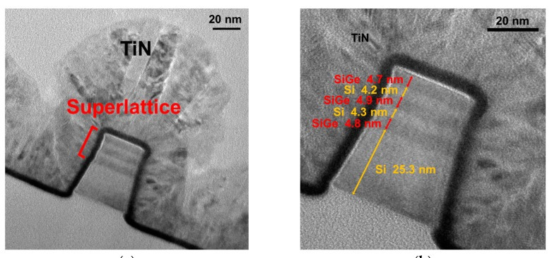
The switch · a FinFET, the modern transistor · ~20 nmAnd at the very bottom, the thing repeated billions of times: a single transistor, a switch with no moving parts. A modern one is a FinFET; the dark loop here is the gate, wrapped over a fin of silicon only a few dozen atoms wide. A small voltage on the gate switches the current through the fin on or off, billions of times a second. Wire enough of these together and you have a computer.
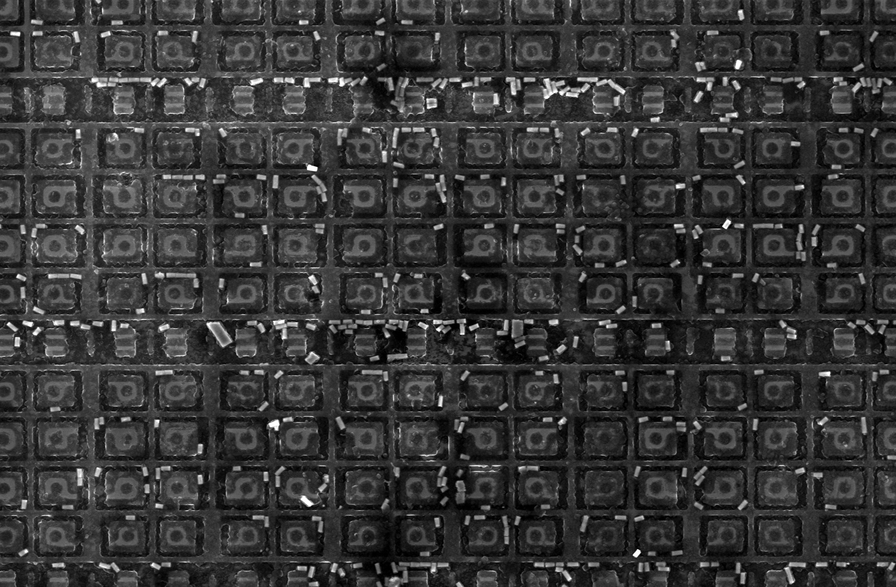
A transistor for space · ring-gate, radiation-hardenedTransistors can be reshaped for a job. These wear round ring gates instead of straight ones, a design that shrugs off radiation so the chip keeps working in orbit, where a stray cosmic ray would scramble an ordinary one.
~0.5 nm
The atom
Keep going, past the wires and the switches, and silicon stops being a smooth material at all. It is, and always was, a lattice of individual atoms, and this is the floor of the whole story.
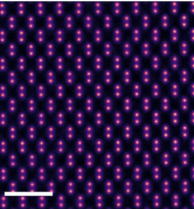
The atoms · silicon, down the [110] axis · ~0.5 nm apartThis is silicon itself, imaged atom by atom (a ptychographic reconstruction, false-colored). You are looking straight down the crystal's [110] direction; each bright dot is a column of silicon atoms, the rows only about half a nanometer apart. The whole $380 million machine, the disc of pure sand, the grown crystal, the city of copper, all of it exists to arrange these dots, a few atoms at a time, a hundred billion times over.
Credits
Images are press, public-domain, or Creative Commons works, gathered from Intel's press kit, Wikimedia Commons, Flickr, and open-access journals. The die photographs are by Fritzchens Fritz, released into the public domain (CC0). Each entry links to its source.
{kind=link}
{kind=link}
{kind=link}
{kind=link}
{kind=link}
{kind=link}